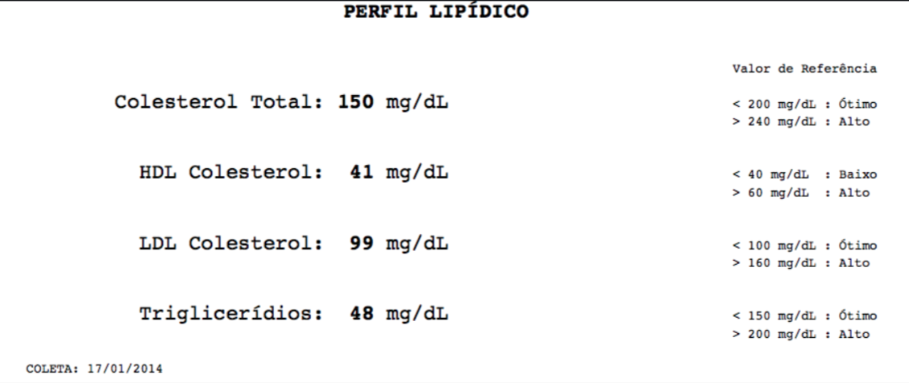
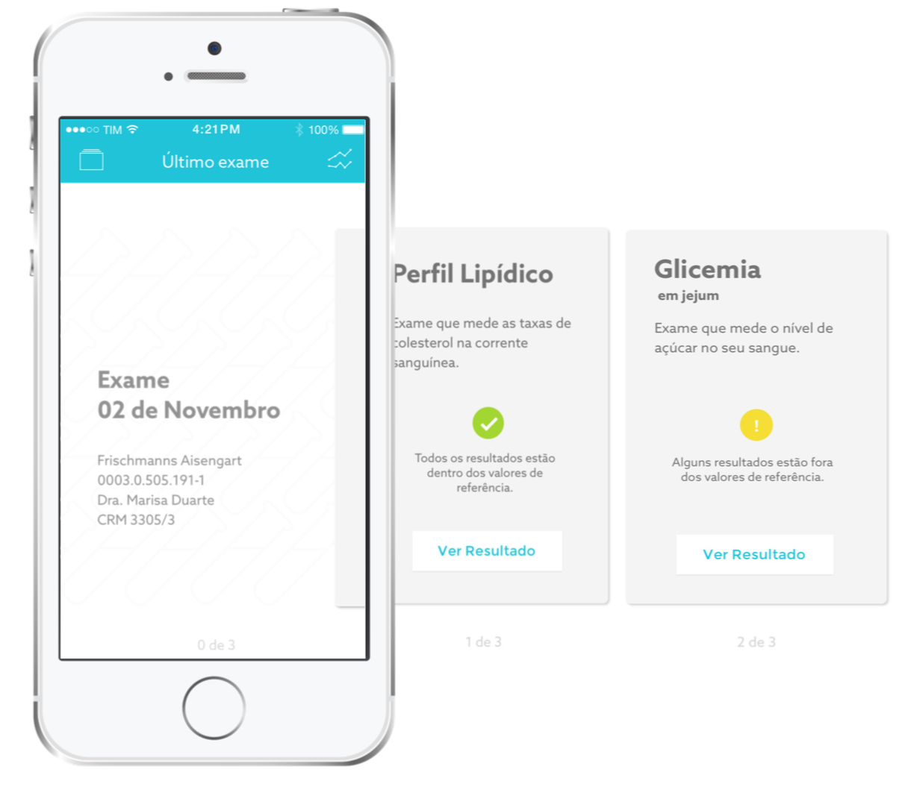

Meu Exame is a mobile app that brings a better way to read and understand laboratorial tests. Meu Exame helps you to improve your health by comparing your old laboratorial tests to make sure you understand your health.
Meu Exame was my final project at university. We were free to choose our brief, so the theme of my project was health - something I'm very interested in.
Here in Brasil - and I truly believe that in other parts of the world it happens too - we have acess to the laboratoty test results, but we don't always understand it clearly. Patients have the rights to understand what is happening with their bodies, because everybody wants to improve their health.
Laboratory tests in Brasil look like this:
It's not very easy to understand because the information is poorly structured. Based on this, I started working on this project and decided to have an app that allows users to import their results form different laboratories and store it so they could understand and compare the information.
One of the most important part of this work were about the information. How would I present it in an easy way to the user, but in the same time not scare him - just inform him so he would be conscious about his decisions related to his health.